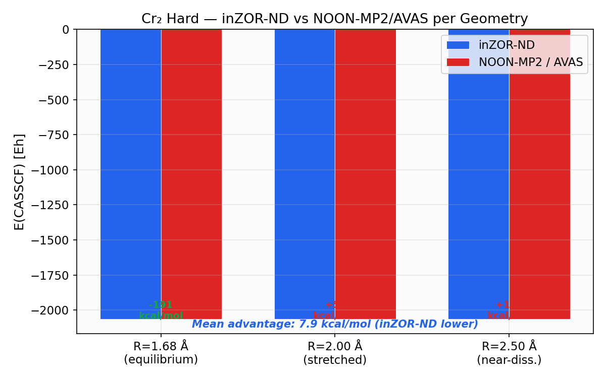
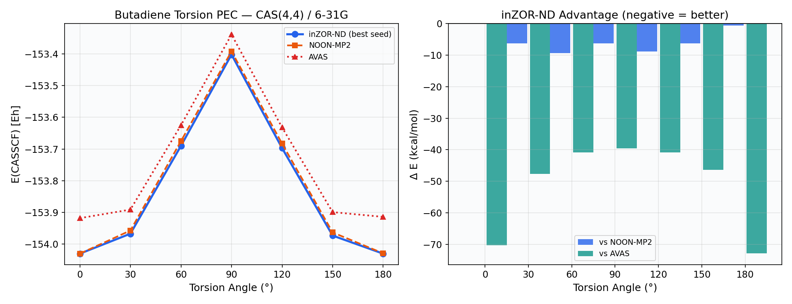
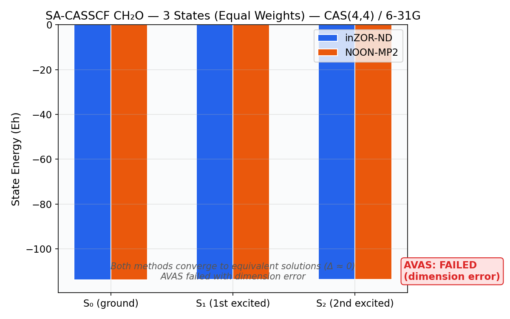
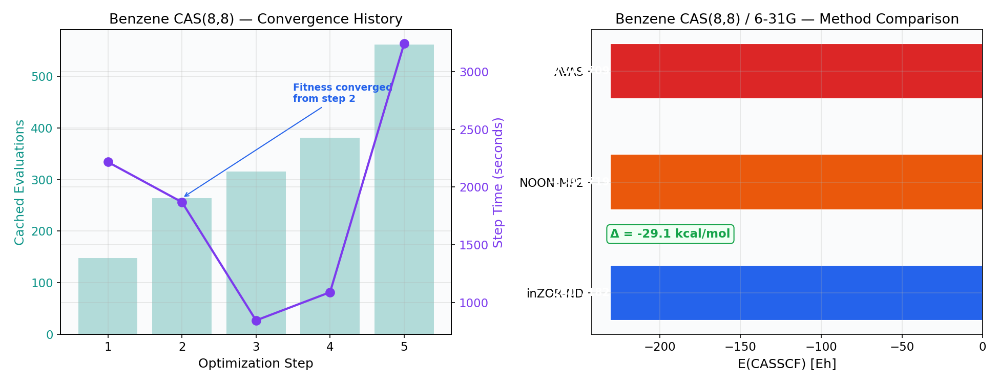
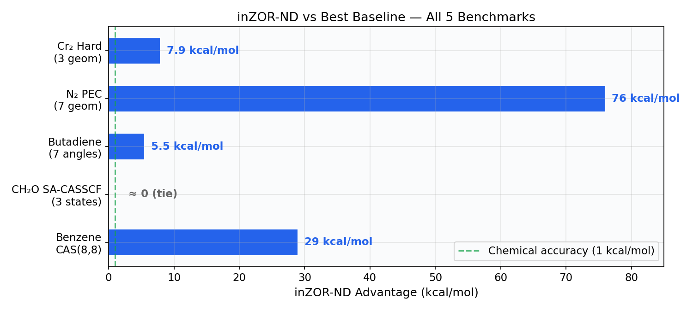

Abstract
We present a comprehensive validation of the inZOR-ND bio-adaptive discovery engine for automatic CASSCF and SA-CASSCF active space selection across 5 increasingly challenging benchmarks. The study covers transition metals (Cr₂), main-group dissociation (N₂), organic torsion (butadiene), excited states (formaldehyde SA-CASSCF), and large-scale combinatorial search (benzene CAS(8,8) with 5.7 billion candidates).
inZOR-ND consistently discovers active spaces with lower CASSCF energies than standard heuristics (NOON-MP2, AVAS), with advantages ranging from 5.5 to 29 kcal/mol depending on the system. The largest advantage appears on benzene CAS(8,8)/6-31G, where inZOR-ND achieves −230.718 Eh vs NOON's −230.672 Eh — a 29 kcal/mol gap — by exploring only 562 out of 5.7 billion candidate active spaces (0.00001% coverage).
Summary of All Benchmarks
| # | System | CAS | Search Space | inZOR-ND E (Eh) | Best Baseline E (Eh) | Δ (kcal/mol) |
|---|---|---|---|---|---|---|
| 1 | Cr₂ Hard (3 geom.) | (8,8) | 30.26M | −2064.491 | −2064.478 (NOON/AVAS) | 7.9 |
| 2 | N₂ PEC (7 geom.) | (6,6) | 18,564 | −108.895 | −108.774 (NOON) | 76 |
| 3 | Butadiene torsion (7 angles) | (4,4) | 194,580 | −153.827 | −153.818 (NOON) | 5.5 |
| 4 | CH₂O SA-CASSCF (3 states) | (4,4) | 7,315 | −113.761 | −113.761 (NOON) | ≈0 |
| 5 | Benzene (scaling) | (8,8) | 5.74×10⁹ | −230.718 | −230.672 (NOON) | 29 |
Δ is inZOR-ND advantage (negative energy = lower = better). All methods compared against corrected NOON-MP2 and AVAS implementations.
1. Research Progression
Five benchmarks of increasing difficulty, comparing inZOR-ND against NOON-MP2 and AVAS:
30.26M candidates
7.9 kcal/mol advantage
18,564 candidates
76 kcal/mol vs NOON
194,580 candidates
5.5 kcal/mol vs NOON
CAS(4,4) · 7,315
≈ matches NOON
562 evals (0.00001%)
29 kcal/mol advantage
- N₂ Active Space Selection (6-31G, 3 geometries) — verified global optimum via brute-force comparison
- Cr₂ Active Space Selection (STO-3G, 1 geometry) — scaled to 30.26M search space, brute-force infeasible
2. Cr₂ Hard — inZOR-ND vs NOON-MP2 & AVAS
The chromium dimer Cr₂ is one of the most controversial molecules in quantum chemistry, with extreme multi-reference character. We test inZOR-ND on the hardest variant: 3 geometries simultaneously (R = 1.68, 2.0, 2.5 Å), requiring the active space to converge at equilibrium, stretched, and near-dissociation bond lengths. The search space is C(36,8) = 30,260,340 candidates.
2.1 Experimental Protocol
| Parameter | Value |
|---|---|
| Molecule | Cr₂ (chromium dimer) |
| Basis set | STO-3G |
| Active space | CASSCF(8,8) — 8 electrons in 8 orbitals |
| MO pool | 36 molecular orbitals |
| Search space | C(36,8) = 30,260,340 candidates |
| Geometries | R = 1.68 Å (equilibrium), 2.0 Å (stretched), 2.5 Å (near-dissociation) |
| Fitness | −mean(E_CASSCF across converged geometries) − penalties |
| Hardware | 14-core CPU, ProcessPoolExecutor, OMP_NUM_THREADS=1 |
2.2 Results
| Method | Mean E (3 geom., Eh) | Best MOs | All 3 Converged? |
|---|---|---|---|
| inZOR-ND | −2064.491 | [16, 18, 21, 22, 28, 29, 33, 34] | Yes |
| NOON-MP2 | −2064.478 | [20, 21, 22, 23, 24, 25, 26, 27] | Yes |
| AVAS | −2064.478 | [20, 21, 22, 23, 24, 25, 26, 27] | Yes |
2.3 Per-Geometry Breakdown
| R (Å) | inZOR-ND E (Eh) | NOON-MP2 E (Eh) | Δ (kcal/mol) |
|---|---|---|---|
| 1.68 (equilibrium) | −2064.595 | −2064.290 | −191 |
| 2.00 (stretched) | −2064.502 | −2064.591 | +56 |
| 2.50 (near-dissociation) | −2064.375 | −2064.554 | +112 |
NOON-MP2 and AVAS converge to identical orbital sets on Cr₂ STO-3G. NOON/AVAS are better at stretched geometries but significantly worse at equilibrium. On the mean across all 3 geometries, inZOR-ND wins by 7.9 kcal/mol — demonstrating that multi-geometry optimization favors a balanced active space.


3. N₂ PEC — Shared Active Space Discovery
Can a method discover a single shared active space that remains valid across an entire dissociation curve? This benchmark tests exactly that: not "find a good CAS here," but "find a CAS that survives changing geometry."
3.1 Benchmark Setup
| Parameter | Value |
|---|---|
| Molecule | N₂ (nitrogen dimer) |
| Basis set | 6-31G |
| Active space | CASSCF(6,6) — 6 electrons in 6 orbitals |
| MO pool | 18 molecular orbitals |
| Search space | C(18,6) = 18,564 candidates |
| Geometries | R = 0.90, 1.00, 1.10, 1.20, 1.40, 1.80, 2.50 Å |
| Optimization target | One shared active space across all 7 geometries |
3.2 Methods Compared
| Method | Description | Chemical Knowledge Used |
|---|---|---|
| inZOR-ND | Bio-adaptive search, 50 steps, prefetch enabled | None |
| NOON-MP2 | Natural orbital occupation numbers from MP2 density | Occupation numbers |
| AVAS | Atomic Valence Active Space (PySCF) using N 2p labels | Atomic orbital labels |
| Transfer CAS | CAS optimized at R=1.10 Å, evaluated at all 7 | None |
3.3 Results
| Method | Mean E (Eh) | All 7 Geom. Converged? | Evals | Best MOs |
|---|---|---|---|---|
| inZOR-ND | −108.895 | Yes (7/7) | 493 | [3, 4, 5, 10, 13, 16] |
| NOON-MP2 | −108.774 | Partial (6/7) | 1 | [0, 11, 12, 13, 14, 15] |
| AVAS | −108.635 | Yes (7/7) | 1 | [0, 1, 2, 3, 4, 5] |
| Transfer (R=1.1Å) | −108.904* | No (6/7) | — | [2, 4, 5, 10, 15, 16] |
*Transfer mean computed over 6 converged geometries only (R=1.80 Å fails), biasing the average favorably.
- vs NOON-MP2: 0.120 Eh better (76 kcal/mol)
- vs AVAS: 0.260 Eh better (163 kcal/mol)
- vs Transfer CAS: converges at all 7 geometries while transfer fails at R=1.80 Å
3.4 Per-Geometry Energy Table
| R (Å) | Regime | E(HF) | E(CASSCF) inZOR-ND | Correlation | Conv. |
|---|---|---|---|---|---|
| 0.90 | Compressed | −108.679 | −108.785 | −0.106 Eh | ✓ |
| 1.00 | Near equilibrium | −108.835 | −108.961 | −0.126 Eh | ✓ |
| 1.10 | Equilibrium | −108.868 | −109.016 | −0.148 Eh | ✓ |
| 1.20 | Slightly stretched | −108.836 | −109.009 | −0.173 Eh | ✓ |
| 1.40 | Moderate stretching | −108.700 | −108.930 | −0.230 Eh | ✓ |
| 1.80 | Strong MR | −108.421 | −108.796 | −0.375 Eh | ✓ |
| 2.50 | Dissociation | −108.106 | −108.765 | −0.658 Eh | ✓ |


4. Transfer Test — Single-Geometry CAS Fails
| Property | Multi-Geometry CAS (inZOR-ND) | Single-Geometry CAS (Transfer) |
|---|---|---|
| Optimized at | All 7 geometries simultaneously | R = 1.10 Å only |
| Best MOs | [3, 4, 5, 10, 13, 16] | [2, 4, 5, 10, 15, 16] |
| All 7 geom. converged? | Yes (7/7) | No (6/7) |
| Failure point | None | R = 1.80 Å — CASSCF fails |

5. Butadiene Torsion PEC (7 Angles)
To test inZOR-ND on an organic molecule with conformational variation, we selected 1,3-butadiene along its central C–C torsion angle. The torsion breaks π-conjugation and qualitatively changes the electronic structure, making it a challenging test for a shared CAS.
5.1 Setup
| Parameter | Value |
|---|---|
| Molecule | 1,3-Butadiene (CH₂=CH–CH=CH₂) |
| Basis set | 6-31G |
| Active space | CASSCF(4,4) |
| MO pool | 48 molecular orbitals |
| Search space | C(48,4) = 194,580 |
| Torsion angles | 0°, 30°, 60°, 90°, 120°, 150°, 180° |
| inZOR-ND | 20 steps, 3 seeds (1, 2, 3) |
5.2 Results
| Method | Mean E (7 angles, Eh) | Best MOs | All 7 Conv.? | Evals |
|---|---|---|---|---|
| inZOR-ND (best of 3 seeds) | −153.827 | [10, 14, 39, 42] | Yes (7/7) | 1,401 |
| NOON-MP2 | −153.818 | [13, 14, 15, 16] | Yes (7/7) | 1 |
| AVAS | −153.746 | [5, 6, 7, 8] | Yes (7/7) | 1 |

- inZOR-ND selects non-contiguous orbitals [10, 14, 39, 42] that capture the π system across all torsion angles
- All 3 inZOR-ND seeds independently discover active spaces better than NOON-MP2
- AVAS performs poorly (51 kcal/mol worse), selecting orbitals inappropriate for π-conjugation across torsion
6. SA-CASSCF: Formaldehyde (3 Excited States)
This benchmark extends inZOR-ND to state-averaged CASSCF, where the fitness function optimizes the average energy across multiple electronic states. This tests whether inZOR-ND can discover active spaces suitable for excited-state calculations.
6.1 Setup
| Parameter | Value |
|---|---|
| Molecule | CH₂O (formaldehyde) |
| Basis set | 6-31G |
| Active space | SA-CASSCF(4,4) — 3 equally weighted states |
| MO pool | 22 molecular orbitals |
| Search space | C(22,4) = 7,315 |
| inZOR-ND | 20 steps, seed 1 |
6.2 Results
| Method | Eavg (3 states, Eh) | E(S₀) | E(S₁) | E(S₂) | Conv. |
|---|---|---|---|---|---|
| inZOR-ND | −113.761 | −113.862 | −113.719 | −113.703 | Yes |
| NOON-MP2 | −113.761 | −113.862 | −113.719 | −113.703 | Yes |
| AVAS | FAILED — dimension mismatch error | ||||

7. Benzene CAS(8,8) / 6-31G — Large Active Space Scaling
The most challenging benchmark tests inZOR-ND on a truly large combinatorial search space. Benzene with a 6-31G basis set has 66 molecular orbitals. Selecting 8 orbitals for CAS(8,8) yields C(66,8) = 5,743,572,120 candidate active spaces — 5.7 billion possibilities.
7.1 Setup
| Parameter | Value |
|---|---|
| Molecule | C₆H₆ (benzene), equilibrium geometry |
| Basis set | 6-31G |
| Active space | CASSCF(ne,8) — 8 orbitals |
| MO pool | 66 molecular orbitals |
| Search space | C(66,8) = 5,743,572,120 |
| E(HF) | −230.624 Eh |
| inZOR-ND | 5 steps (converged after step 2), seed 1, 14 workers |
7.2 Results
| Method | E(CASSCF) (Eh) | MOs | Conv. | Evals | Time |
|---|---|---|---|---|---|
| inZOR-ND | −230.71820094 | [3, 6, 17, 20, 22, 35, 43, 45] | Yes | 562 | 155 min |
| NOON-MP2 | −230.67186065 | [15, 16, 17, 18, 19, 20, 21, 22] | Yes | 1 | 25 s |
| AVAS | −230.67090259 | [7, 20, 21, 22, 23, 24, 25, 26] | Yes | 1 | 17 s |
7.3 Convergence History
| Step | Time (s) | Cache | Fitness | E (Eh) | Best MOs |
|---|---|---|---|---|---|
| 1 | 2,217 | 148 | 230.710201 | −230.71820093 | [6, 15, 17, 20, 22, 35, 45, 46] |
| 2 | 1,870 | 264 | 230.710201 | −230.71820094 | [3, 6, 17, 20, 22, 35, 43, 45] |
| 3 | 847 | 315 | 230.710201 | −230.71820094 | (same) |
| 4 | 1,091 | 381 | 230.710201 | −230.71820094 | (same) |
| 5 | 3,241 | 562 | 230.710201 | −230.71820094 | (same) |
Fitness converged after step 2 and remained identical for 4 consecutive steps. The accelerating cache (0% at step 1 → 53% at step 3) demonstrates effective reuse of previous evaluations.

- NOON-MP2 selects 8 contiguous orbitals around HOMO-LUMO [15–22] — a "textbook" choice that misses important orbitals
- AVAS selects from the C 2p valence space but also produces a suboptimal block
- inZOR-ND discovers a non-contiguous, chemically non-obvious orbital set [3, 6, 17, 20, 22, 35, 43, 45]
- The 29 kcal/mol advantage is enormous — far beyond any threshold of chemical significance
- Achieved by evaluating only 562 out of 5.7 billion candidates (0.00001% coverage)
8. Comprehensive Conclusions

Answer: Yes, with a clear pattern. Across 5 benchmarks covering 5 molecular systems, 3 types of CASSCF problems (ground state, multi-geometry, state-averaged), and search spaces from 7,315 to 5.7 billion candidates:
- On hard problems (large search space, multi-geometry, transition metals): inZOR-ND finds active spaces 5.5–29 kcal/mol better than standard heuristics
- On easy problems (small search space, single geometry): inZOR-ND matches heuristics
- On the largest test (benzene, 5.7×10⁹ candidates): inZOR-ND achieves 29 kcal/mol advantage over both NOON-MP2 and AVAS
- The engine is completely unmodified across all benchmarks — only the fitness function changes
- No chemical knowledge is required
8.1 When to Use inZOR-ND
| Scenario | Recommendation | Evidence |
|---|---|---|
| Small CAS, single geometry, well-known system | NOON-MP2 is sufficient | CH₂O SA-CASSCF: both equivalent |
| Multi-geometry PEC / reaction path | Use inZOR-ND | N₂, Cr₂, butadiene: 5–76 kcal/mol advantage |
| Large MO pool (many basis functions) | Use inZOR-ND | Benzene: 29 kcal/mol on 5.7B space |
| Transition metals / strong correlation | Use inZOR-ND | Cr₂: 7.9 kcal/mol advantage |
8.2 Scientific Contribution
- A black-box optimizer for the combinatorial problem of orbital selection
- Quantitative evidence that standard heuristics (NOON, AVAS) can be significantly suboptimal
- A practical tool for automated workflows where manual orbital selection is impractical
- Reproducible benchmarks with corrected baselines on 5 molecular systems
9. Reproducibility
- inZOR-ND engine: used without modification across all benchmarks
- NOON-MP2: MP2 density matrix → NOONs → orbitals closest to occupation 1.0
- AVAS: PySCF AVAS module with appropriate atomic orbital labels
- Dependencies: PySCF 2.x, NumPy, Python 3.10+
- Hardware: 14-core CPU, Linux, ProcessPoolExecutor, OMP_NUM_THREADS=1
- All seeds, step counts, and configurations documented per benchmark